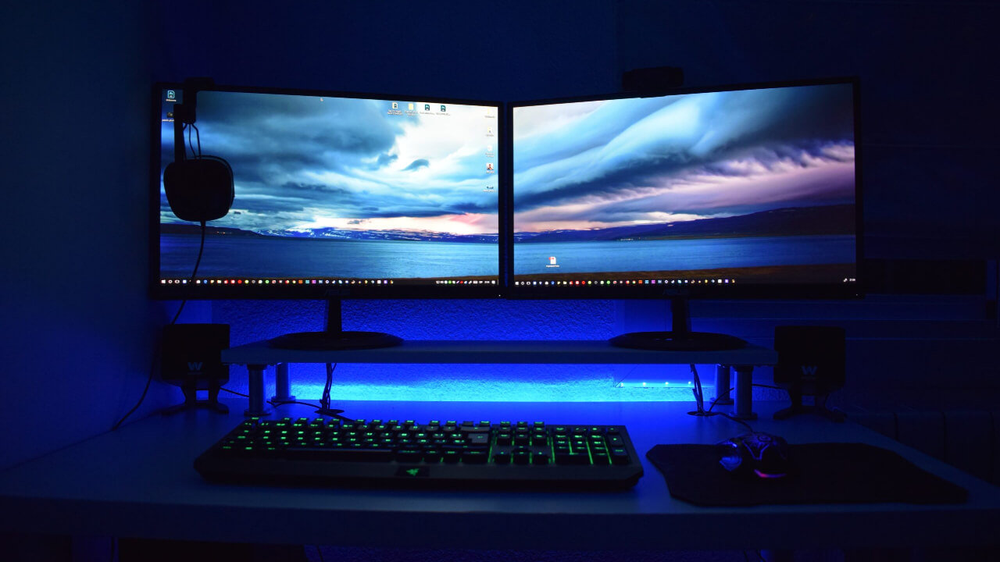

Monitor gamer de 24 pulgadas con resolución Full HD y 144Hz ideal para videojuegos. Marcas disponibles: LG, Samsung, ASUS y MSI. Monitor curvo de 27 pulgadas diseñado para una experiencia inmersiva en videojuegos
y entretenimiento multimedia.
Monitor curvo de 27 pulgadas diseñado para una experiencia inmersiva en videojuegos
y entretenimiento multimedia.
 Monitor ultrawide ideal para productividad, diseño y multitarea.
Permite trabajar con varias ventanas al mismo tiempo.
Monitor ultrawide ideal para productividad, diseño y multitarea.
Permite trabajar con varias ventanas al mismo tiempo.
 Monitor con resolución 4K Ultra HD ideal para diseño gráfico,
edición de video y trabajos profesionales.
Monitor con resolución 4K Ultra HD ideal para diseño gráfico,
edición de video y trabajos profesionales.
 Monitor económico ideal para oficina, estudio o uso doméstico.
Pantalla de 22 pulgadas con resolución Full HD.
Monitor económico ideal para oficina, estudio o uso doméstico.
Pantalla de 22 pulgadas con resolución Full HD.

Monitor gamer con tasa de refresco de 165Hz y tiempo de respuesta de 1ms, ideal para juegos competitivos.